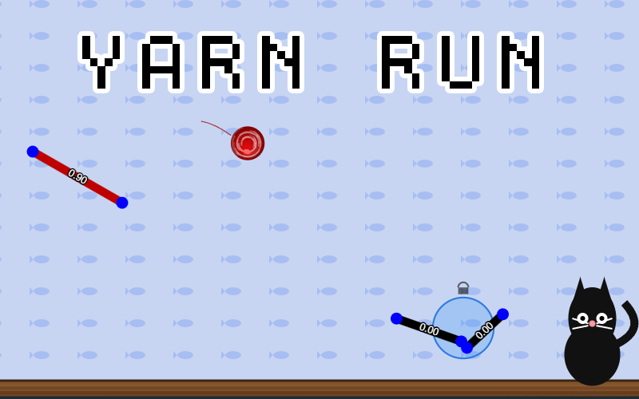
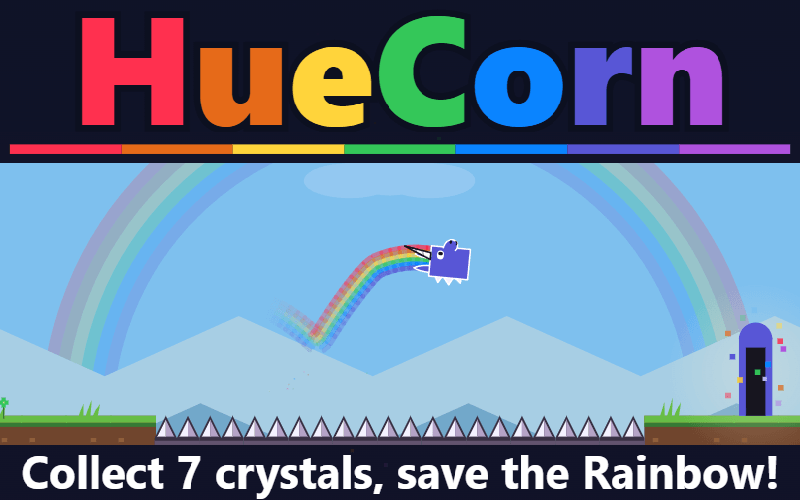

Super Meatly Boy: fifteen levels of jumping fun, built in under 48 hours while learning Processing JS.
Play Super Meatly Boy ↗It started with Super Meatly Boy. Fifteen jam entries in, I’m still finding new things to make with pixels and code. Here’s the journey, from the beginning.
Learning by making, one game jam at a time.
Super Meatly Boy: fifteen levels of jumping fun, built in under 48 hours while learning Processing JS.
Play Super Meatly Boy ↗
Clicky Pixel: tap through four levels, unlock characters and keep squeezing through the gates. Awaiting patching and re-release.
Archived project · Not currently available to play
Mech Stroller: walk, shoot and survive waves of enemies while keeping your gun from overheating. An early prototype made in just over a week.
Play Mech Stroller ↗
Explore randomly generated rooms, hunt down the baddies and fry them with your torch.
Play Light of the Living Dead ↗
Break out of prison in a side-view platformer with simple puzzles and a monstrous twist.
Play Monster Break Out ↗Quick Wins marked my first JS13k entry. The next challenge: see what else would fit.

Back to the handheld days. A Game Boy-inspired platformer and my very first JS13k entry.
Play Quick Wins ↗
A little space cafe, built a pixel at a time. A building sim squeezed into less than 13 kilobytes.
Play In To Net Cafe ↗
A cat in space and a twin-stick shooter. Sometimes that’s all you need.
Play Space Kitty ↗
Your soul is your stepping stone. Jump, rewind and find a way forward.
Play Soul Jumper ↗
A knight’s adventure, seen from a different angle. Small in size, big on spirit.
Play Fort Knight ↗From Pixel Power to HueCorn, with a little Flappy Bean detour along the way.
Vampire Survivors meets pixels. Small characters, a whole lot of chaos.
Play Pixel Power ↗
Watch your step. An isometric parkour adventure packed into 13 kilobytes.
Play The Fear Factory ↗
A little bean. A familiar challenge. One more try is always a good idea.
Play Flappy Bean ↗
My 2025 JS13k entry. Another little browser game, packed into the jam’s 13-kilobyte limit. Jump in and play for free.
Play Yarn Run ↗
My 2026 JS13k entry. A new browser adventure within the jam’s tiny 13-kilobyte limit. Give it a go — free to play.
Play HueCorn ↗Fifteen stops so far. More pixels, experiments and little worlds to come.
Explore the whole game shelf ↗